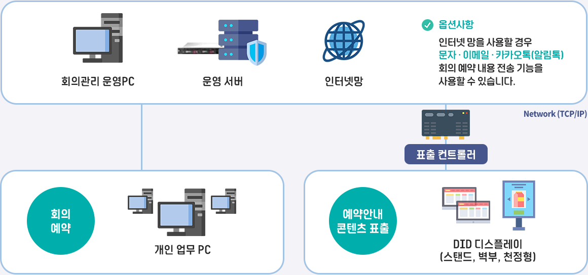

회의 예약·안내 시스템 구성
Conference Room Reservation System Configuration

회의 예약·안내 시스템 구성은 네트워크 기반입니다. 사용자가 부여받은 계정을 통해 회의를
직접 예약할 수 있으며 예약 정보는 안내 디스플레이에 실시간으로 자동 연계 표출됩니다.
회의 예약·안내 주요기기
Conference Room Reservation System Main Instrument
-
회의 예약·안내 서버

- 운영 및 DB서버
- 스케줄 및 콘텐츠 보관
- 표출 컨트롤러 관리
- 윈도우 서버 OS 기반
-
회의 예약·안내 운영PC

- 표출 컨트롤러 원격 관리
- 콘텐츠 표출 및 제어 (업로드)
- 스케줄 편성 및 전송
- 윈도우 OS 기반
-
표출 컨트롤러

- 콘텐츠 저장·재생
- 스케줄 저장·재생
- 자동 전원 On / Off
- 윈도우 임베디드 OS 기반
-
디스플레이 (LCD / DID)

- 산업용 디스플레이
- 다양한 화면크기 (32"-98")
- 선명도를 위한 전용 패널 사용
- 다양한 타입의 디스플레이